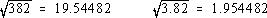
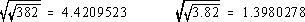
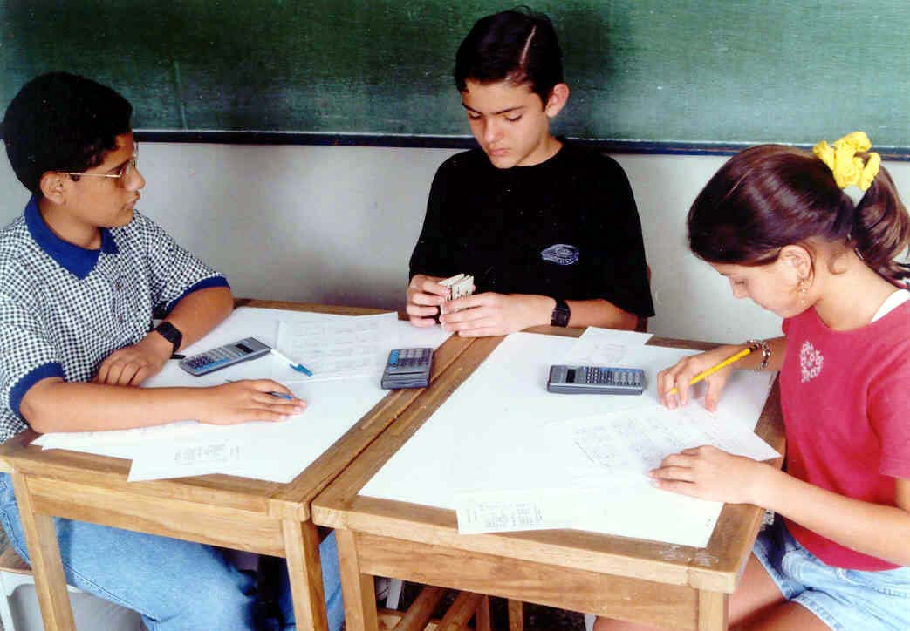
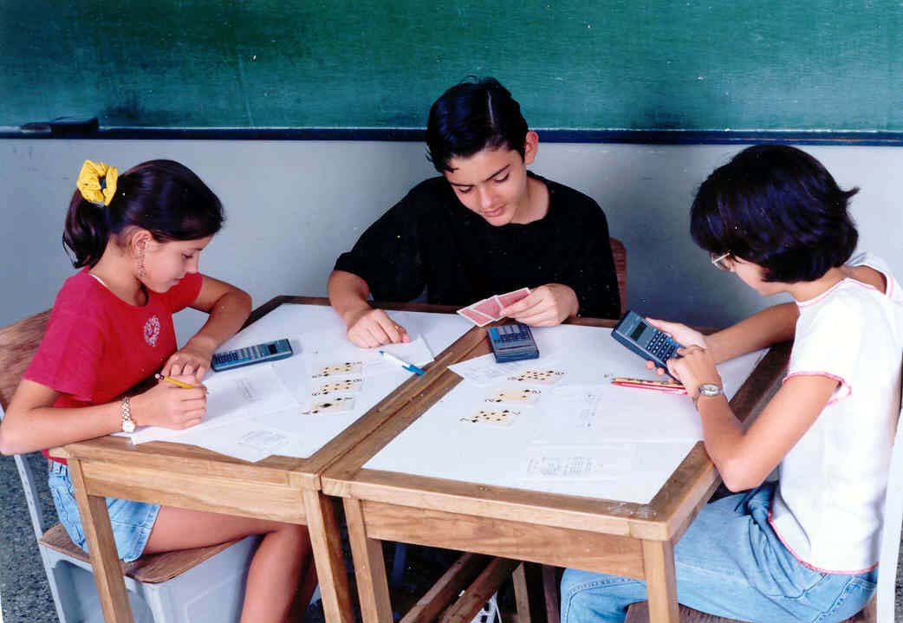

Mathematical games are always a popular adjunct in any teacher's repertoire of motivational activities. This game promotes learning and fun at the same time by combining two unlikely allies: a deck of ordinary playing cards and a calculator. The material presented here utilizes a
simple, four-function calculator with a square root key. With minor
adjustments, the more powerful scientific models may be used.
There are many ideas that a student can pick up while playing this game, not the least of which is the added familiarity with the calculator's utility as a tool. Reading and writing the displayed
digits carefully and precisely are skills that need to be developed in
certain students. Of particular relevance to the game is the careful
identification of which digits produce one's best hand.
The basic game involves 3 players using 3-digit numbers. Remove the king, queen, jack and ten of any particular suit from the deck of cards. The nine remaining cards (Ace to 9) constitute the playing deck.
The value of the Ace will be 1. Each player uses his/her own calcuator, a recording sheet with headings: Number, Root, Combination, Points, a copy of the scoring chart (Figure 1), and a pencil.
RULES OF PLAY
- The dealer shuffles the deck and deals 3 cards face down to each player.
- Each player arranges his/her cards left-to-right, without turning them over, in any way desired.
- When all players have arranged their cards, the dealer says, "Turn over." All cards are then turned face up without changing their left-to-right order. The 3-digit number thus produced is entered into the first column of the recording sheet.
- All players enter their numbers into their calculators and press the square root key. The displayed value, which represents one's playing hand, is written in the next column of the recording sheet.
- Each player then carefully studies the digits of the square root to determine the highest scoring combination (see Score Chart) which is then written in the third column. For example, the number 142 yields the square root of 11.916375, and the three ones give the highest scoring combination of
"three of a kind".
- The points are determined by adding the base score given in the Score Chart to the value of the largest digit involved in the combination. The largest digit in the combination constitutes the Bonus Points. So, in the illustration above, 142 has a square root of 11.916375, for which the base score is 30 points (three of a kind: 1, 1, 1) plus 1 Bonus Point for the largest digit in the combination. After adding, the total (i.e. 31) would be
written in the Points column of the recording sheet.
Examples: If one has two pairs (6,6 & 2,2), the score would
be 20 + 6 = 26 points.
If one has a full house (4,4,4 & 7,7), the score is 50 + 7
= 57 points.
For a run (1,2,3,4,5), the player scores 100 + 5 = 105 points.
- For the 2nd and 3rd hands of a game, Rules 1-6 are followed as before. But for the 2nd hand, the square root key is pressed twice; for the 3rd hand, the square root key is pressed three times.
- After 3 hands are completed, the points are totaled and the winner is declared.
| A Sample Game |
| Number |
Root |
Combination |
Points |
| 795 |
28.195744 |
1 pair: 4, 4 |
14 |
| 641 |
5.0316972 |
all different |
200 |
| 436 |
2.1376461 |
2 pairs: 6,6,1,1 |
26 |
This player's score is 240, a good game.
ADDITIONAL SCORING COMMENTS
First, from time to time a perfect square is formed by the cards. Since here a square root (i.e. one press of the key) only has 2 digits and that isn't enough to form any hand in the first part of the score chart, an award of 100 points is given. And once in a while, all the eight digits that appear in the display are different, or distinct. We feel that such an event is unique enough to merit the award of 200 points! Experience has revealed that occasionally only 7 digits (or even 6) appear, all of which are distinct. So a point value is assigned to each of these cases. However, no bonus points are given in any of the above cases.
When using scientific calculators with 10-digit display capacity, just instruct the players to copy the first 8 digits that appear, that is, "truncate to 8 digits". While rounding the decimal part to achieve 8 digits is possible, our experience has shown that truncation is simpler to explain to the majority of students.
VARIATIONS OF THE BASIC GAME
There are many possibilities to vary the basic game: use more number cards at once (i.e. 2 sets of Ace through 9), deal more cards for each hand (i.e. 4 cards to form 4-place numbers), include one or
more jokers (they equal zero, or become a "wild card"), allow more hands to constitute a game, etc. Presented below are several more variations that have proved popular and instructive in our classroom. Of course, the reader is encouraged to devise his/her own rules.
- Decimal Numbers. Once the three cards in the basic game are turned face up and the digits are noted on one's paper, a decimal point can be inserted between the second and third digits, or prior to the first one. Example: for 382 we would have "38.2" or "0.382". It is of interest to note that placing the point between the first and second digits does not produce
a different set of digits for one press of the square root key, as can be demonstrated by the example shown here.

The reason behind this is well known to anyone who has studied the properties of radicals in an algebra class. However it is not necessary to go into the details of why in order to play the game. But it could be explained if students express an interest. So turn it into another of those special "teachable moments" we all look for. However, for 2 (or 3) presses of the square root key, different digits do appear.

- Fractions Game. Form a fraction using the cards dealt to you.
For instance, when using 4 cards per deal, let the first two form the numerator and the latter two form the denominator. In most calculators, this only amounts to converting the fraction to its decimal equivalent by dividing before pressing the square root key. For those who have calculators with fraction keys
(as the TI Explorer and others), this is made even easier. This game variant, therefore, reinforces the connection between decimals and fractions.
- Add-to-your-neighbor Game. Your playing number is found by adding your 3-digit "card number" to that of the player to your immediate left (or right) and putting the sum into the first column of the recording sheet. For instance, if the cards gave 329 for A, 416 for B, and 785 for C, then each player's new number would be 745 for A, 1201 for B, and 1114 for C.
- Third-Round-Sum Game. You form your playing number for the third
round by adding the numbers used for the first and second rounds. With 624 for the first round and 179 for the second round, you use 803 for the third round. (This has the advantage of speeding up the game as there's no need to deal the cards again.)
- Constant-Multiples Game. Throughout your game you multiply your
card number by some pre-set number, say your age, the day's date, a favorite prime, etc. If Player A is 14 years old and his card value is 291, the playing number would be 4074. For students who can appreciate it, this is a good time to introduce the constant operation feature of the calculator and show that pressing the root key does not inactivate the constant multiplier as one goes
from round to round.
WHAT ELSE?
An important spinoff can involve a statistical analysis of the data that can be collected after many games have been played by the whole class or merely a small group. For example, have the students
compute the arithmetic mean of various final scores: per hand, per game, per group of players, etc. An additional connection to probability can also be explored by constructing frequency histograms of the types of the hands that occurred throughout. The raw data is easily obtained from the students' recording sheets.
One of our students showed us an important example of that "what-if" curiosity that needs to be promoted more in our classes. She thought: "What if I had arranged my cards differently? What might
have been my score?" So she took the card numbers from several of her games that day and proceeded to form all the various possibilities, then obtained the square roots and points. She was so proud of herself, as we were of her. What makes this more outstanding is that she was a below average performer, yet did this quite independently.
This game, in its own special way, provides a connection between the world of regular mathematics and that of simple gaming pastimes. It's fun and one learns all the while.
CALCULATOR POKER
Score Chart
Combination Base Score
One Pair 10 points
Two Pairs 20 points
Three of a Kind 30 points
Three Pairs 40 points
Full House (3 of one kind, 2 of another) 50 points
Two Trios (2 sets of 3 of one kind) 60 points
Four of a Kind 70 points
Five of a Kind 80 points
Run (5 consecutive digits) 100 points
Special Cases:
*Perfect Square 100 points
*All 8 digits different 200 points
*Only 7 digits showing, all different 150 points
*Only 6 digits showing, all different 125 points
[*No bonus points in these cases.]
Figure 1
| Sample Hands & Scores |
| Number |
Root |
Hand |
Points |
| 158 |
12.569805 |
5, 5 |
15 |
| 145 |
12.041594 |
4, 4 & 1, 1 |
24 |
| 142 |
11.916375 |
1, 1, 1 |
31 |
| 138 |
11.74734 |
1, 1, 4, 4 & 7, 7 |
47 |
| 149 |
12.206555 |
5, 5, 5 & 2, 2 |
55 |
| 152 |
12.328828 |
2, 2, 2 & 8, 8, 8 |
68 |
| 485 |
22.022715 |
2, 2, 2, 2 |
72 |
| 147 |
12.124355 |
1, 2, 3, 4, 5 |
105 |
| 169 |
13 |
square |
100 |
| 786 |
28.035691 |
all different |
200 |
[Note: The square roots in this table were obtained from a simple, 4-function, 8-digit calculator.]
This article of mine is from MATHEMATICS TEACHING in the MIDDLE SCHOOL. NCTM. Feb. 1998.
pp. 366-8. Reprinted with permission. (See photos following.)

